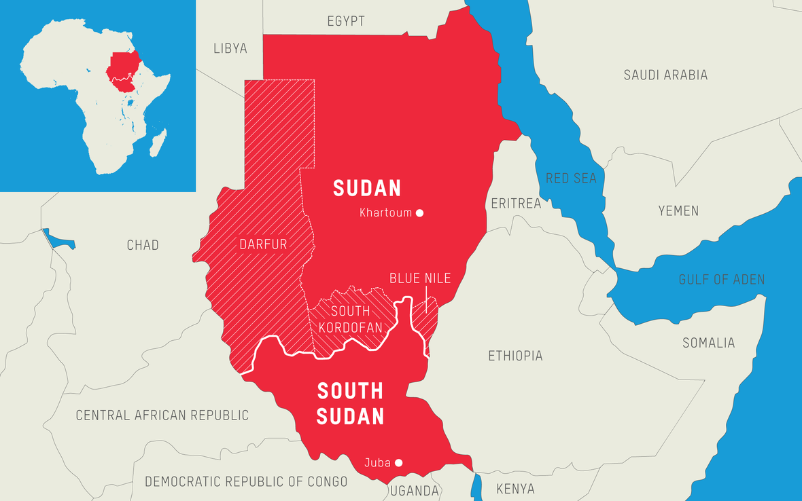

Good
Sudan

Login

Official Name:
int'l long form: Sudan
int'l short form: Republic of the Sudan
former:
Anglo-Egyptian Sudan
Other Cities:
Omdurman (2.1 million), Port Sudan (pop. 450 000), Kassala, Kosti,
Juba, the capital of southern region.
Location:
North-eastern Africa, south of Egypt, bordering the Red Sea, between Egypt and Eritrea.
Area: 2.5 million km (965,255 sq. mi.); North and South
Terrain:
Generally flat with mountains in east and west. The southern regions are inundated during the annual floods of the Nile River system.
Climate:
Desert and savanna in the north and central regions and tropical in the south.
Nationality:
Sudanese
Population:
40 million (in 2015)
Ethnic Groups:
Sudanese Arab (approximately 70%), Fur, Beja, Nuba, and Fallata.
Religions:
Sunni Islam (official), small Christian minority.
Languages:
Arabic (official), Nubian, Ta Bedawie, Fur, English.
|  |
The nation is located in northeastern Africa, bordering the Red Sea in the northeast and Egypt to the north and Eritrea to the east.
Additionally, it shares maritime borders with Saudi Arabia and is bordered by Libya in the north-west, Chad in the west, the Central African Republic in the south-west, South Sudan in the south, and Ethiopia in the south-east. At 1,886,068 km2, Sudan is the sixteenth-largest country in the world, more than five times the size of Germany and just under one-fifth the size of the United States. The estimated population of Sudan in 2015 was 40 million. Its capital is Khartoum, its major city is Omdurman , and its primary port is Port Sudan. Sudanese Arabic, the primary tongue of the nation, and Beja (Bedawi), a language spoken in the Red Sea, are both widely spoken. |
| After gaining independence in 1956, issues for the new country in the form of north-south war arose almost immediately. |
| The immense cultural contrasts between these two regions carefully separated from one another under British rule were now escalating quickly, and civil war was on the horizon. |
| In 1958, General Ibrahim Abboud launched a military coup that toppled the government. Martial law was imposed, the legislature was disbanded, and Abboud was installed as the new prime minister. |
| A second coup in 1969, this one led by Colonel Jafaar Mohammed al-Nimeiry, established a revolutionary council as the ruling body. In an effort to put an end to the conflict between the north and south, Nimeiry, the first president of the Sudan to be elected, signed the Addis Ababa agreement in 1972. |
| After almost ten years of uneasy peace, Nimeiry won re-election for a third term in 1983. However, his plans for economic recovery fell short, and dissatisfaction increased once more. |
| As a result, Nimeiry was overthrown in an unarmed coup in April 1985. |